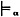
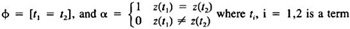
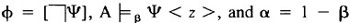
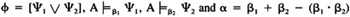
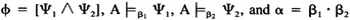
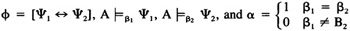
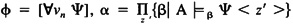
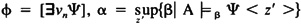

by Abraham Kandel
CRC Press, CRC Press LLC
ISBN: 084934297x Pub Date: 11/01/91
|
|
Fuzzy Expert Systems
by Abraham Kandel CRC Press, CRC Press LLC ISBN: 084934297x Pub Date: 11/01/91 |
| Previous | Table of Contents | Next |
Example 3: A Probabilistic Model
This is the type that is given in Example 1. The universe is the set of elements given as values in Table 1. The constant symbol “red” is mapped to the element ‘red’. The relation symbols are mapped to probabilistic relations, according to Table 1. The relevant constraints that are F and PS are symmetric relations. The probability of F(x,y) is the same as the probability of F(y,x), and likewise for PS. We do not specify in this example probabilities of implications. Note that in most cases, the sum of the probabilities over the attributes of an entity in each relation is not equal to one, meaning that the other values are unknown (e.g., in what other cities s2 may be located). Note also that although in Table 1 the relations PS and F do not appear symmetric, this is so just to save space, and the omitted tuples that would make these relations symmetric are implied by the constraints.
An assignment in FOPC is a mapping of variables to elements of the universe. We could have defined in PL a probabilistic assignment, which would have assigned each variable x to a set of elements so there is a probability pc that c is the element assigned to x. This would correspond to uncertainty in the modeling process, rather than uncertainty in the external facts. However, the above choice would complicate the model without any evident benefits. Therefore, we define assignment in PL as it is defined in FOPC.
| P | SP | PS | ||||||||
|---|---|---|---|---|---|---|---|---|---|---|
| p# | Color | p | S# | P# | p | S1# | S2# | p | ||
| p1 | Red | .5 | s1 | p1 | .7 | s1 | s1 | 1 | ||
| p2 | Red | .3 | s1 | p2 | 1 | s1 | s3 | .7 | ||
| p2 | Blue | .7 | s1 | p3 | .2 | s2 | s2 | 1 | ||
| p3 | Green | .5 | s1 | p4 | .6 | s3 | s3 | 1 | ||
| p4 | Red | 1 | s2 | p1 | 1 | s4 | s4 | 1 | ||
| s2 | p2 | 1 | ||||||||
| S | s2 | p3 | .5 | F | ||||||
| S# | City | p | s2 | p4 | .7 | S1# | S2# | p | ||
| s1 | N.Y. | .7 | s3 | p1 | .4 | s1 | s1 | 1 | ||
| s1 | N.O. | .3 | s3 | p2 | 1 | s1 | s2 | .8 | ||
| s2 | N.Y. | .4 | s3 | p3 | .5 | s2 | s2 | 1 | ||
| s3 | N.Y. | .6 | s4 | p2 | .7 | s3 | s3 | 1 | ||
| s4 | N.O. | 1 | s4 | p4 | .6 | s4 | s4 | 1 | ||
A formula φ is satisfied (in FOPC) in a model A for an assignment z, and we write A φ <z>, if for the assignment z φ expresses a fact which is correct (true) in the world corresponding to the model A. FOPC is dichotomic: every formula is either satisfied in a structure or not; there are only two truth values: true or false. In PL, we have at least two possible directions of generalization of FOPC. The first one retains the traditional truth values true and false, and a formula φ is satisfied if the probability of the facts expressed by φ is at least a threshold p. The p may be 1, or in some cases less than one, depending on the application for which we tailor the logic. An alternative approach is to extend the range of truth values to the closed interval [0,1]. The 0 corresponds to false (probability of satisfaction is zero); the 1, to true (probability of satisfaction is one); and the intermediate values express intermediate probabilities of satisfaction of the formula in a given model (similar to fuzzy logic). In the following we formalize the second approach.
The probabilistic satisfaction of a formula φ in a probabilistic model A of type T with assignment z, written A  φ <z> (α being the probability of satisfaction) is defined as follows:
| 1. | φ = [R (t1, . . . ,tn)] and α = pR <x1, . . . ,xn> where z(ti) = xi, 1 ≤ i ≤ n |
| 2. |  |
| 3. |  |
| 4. |  |
| 5. |  |
| 6. |  |
| 7. | , where z′ ranges over all assignments which agree with z on every variable except possibly on νn, and no two assignments z′ agree on νn |
| 8. |  where z′ ranges over all assignments which agree with z on every variable except possibly on νn |
| Previous | Table of Contents | Next |